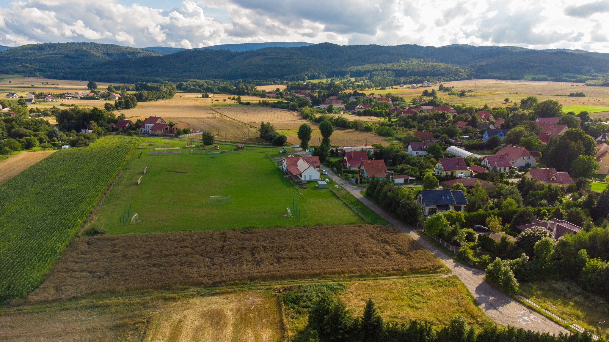
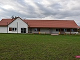

🏢 Sala sołecka w Piskorzowie
Sala została uroczyście otwarta 18 października 2020 r. podczas ceremonii z udziałem burmistrz Doroty Koniecznej‑Enözel i sołtys Janiny Nieśpiałowskiej. W wydarzeniu uczestniczyły Koło Gospodyń Wiejskich, lokalny klub sportowy LKS „Boxmet” oraz OSP Piskorzów.

🏗️ Przebudowa i rozszerzenie
Inwestycja realizowana od czerwca 2019 r. obejmowała rozbudowę istniejącej świetlicy:
- Zwiększenie powierzchni z 359,6 m² do 439,1 m²
- Nowa kuchnia i kotłownia, szatnie dla klubu sportowego, zadaszona trybuna dla widzów
- Wymiana stropodachu na dach dwuspadowy, pełna wymiana instalacji (wod.-kan., CO, c.w.u., gaz, wentylacja, elektryka)
- Ocieplenie ścian, utwardzenie terenu kostką oraz modernizacja kanalizacji i zbiornika gazu płynnego

💰 Finansowanie
Całkowita wartość przebudowy wyniosła 1 300 000 zł, w tym dofinansowanie 500 000 zł z Programu Rozwoju Obszarów Wiejskich 2014‑2020. Gmina pozyskała dodatkowo 30 000 zł z Urzędu Marszałkowskiego na wyposażenie sali gastronomicznego sprzętu (wartość wyposażenia ok. 60 000 zł).
📅 Wykorzystanie i funkcje społeczno‑kulturalne
Sala służy obecnie jako lokalny ośrodek spotkań: odbywają się zebrania wiejskie (np. 3 kwietnia 2025 r. – budżet i strategia rozwoju), a także wydarzenia KGW, zajęcia sportowe klubu “Boxmet”, a także lokalne uroczystości.
